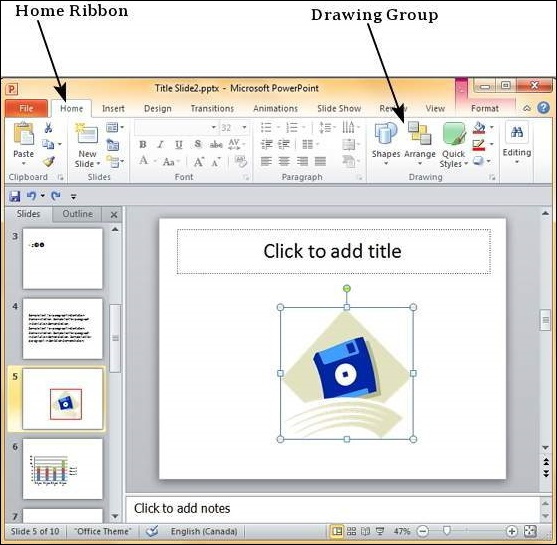
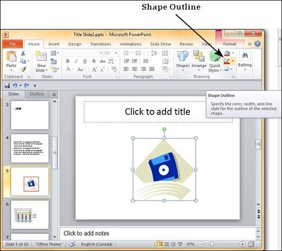
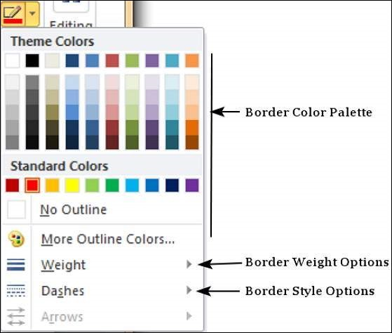
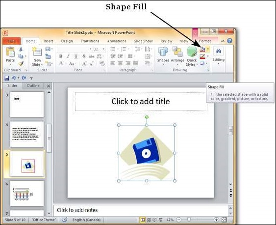
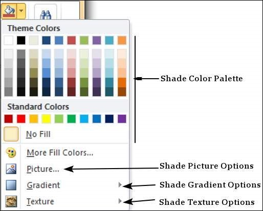

One can change the borders and shading for most of the content in PowerPoint. Let’s see how it is done
The following are the steps that will help you apply borders in your presentation.
Step 1 − Select the object (text box, image, chart, picture, etc.) to which you want to apply the border.
Step 2 − Go to the Drawing group under the Home ribbon.

Step 3 − Click on the Shape Outline to choose the border settings.

Step 4 − Use the color palette to choose the border color. You can choose More Outline Colors to get access to additional color choices
Step 5 − Use the Weight dropdown to define the thickness of the border.
Step 6 − Use the Dashes option to define the border style.

The following steps will help you apply shades to your presentation.
Step 1 − Select the object (text box, shape, chart, etc.) to which you want to apply the shades.
Step 2 − Go to the Drawing group under the Home ribbon.
Step 3 − Click on the Shape Fill to choose the shade settings.

Step 4 − Use the color palette to choose the shade color. You can choose More Outline Colors to get access to a choice of colors.
Step 5 − Use the Picture to add a picture as the background rather than a color.
Step 6 − Use the Gradient option to add color gradient in the background. You can use the pre-defined gradients or click on "More Gradients…" to customize the shading with gradient colors.
Step 7 − Use the Texture option to add a pre-defined texture instead of a color shade.
